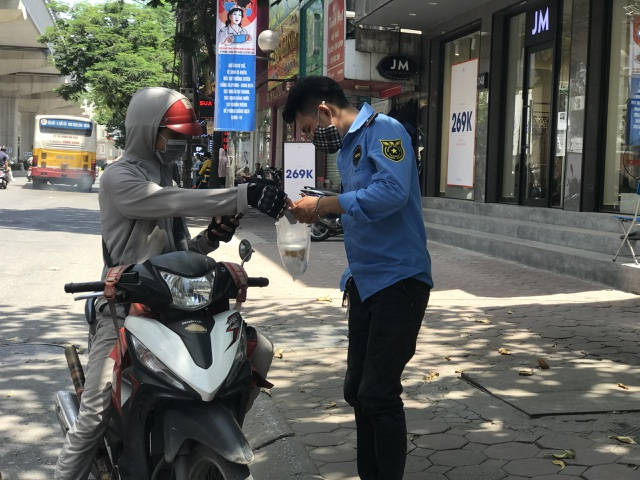

Tin liên Quan
Shipper ở Hà Nội "cháy đơn" đợt nắng nóng, thu nhập không cao như lời đồnHà Nội: Đội nắng 40 độ C, shipper làm không hết việc
Người vận chuyển" kiếm tiền triệu mỗi ngày giữa mùa dịch
Tin tức nóng bỏng Dịch Covid-19 và nắng nóng khiến nhu cầu gọi shipper (người giao hàng, vận chuyển hàng hóa) tăng vọt trong thời gian gần đây.
Đội nắng 40 độ C đi giao hàng
Gần 2 tuần nay, khi dịch Covid-19 "nóng" lên, chị Lê Hương (Hoàng Mai, Hà Nội) gần như không ra khỏi nhà. Mọi hoạt động mua sắm của nhà chị đều diễn ra trên mạng với chiếc điện thoại thông minh. Chỉ sau 15 phút đặt hàng, đồ dùng chị cần mua đều được shipper giao đến tận cửa.
Ngoài số tiền chị trả để mua hàng, chị phải trả công vận chuyển cho shipper. Cước phí cho cung đường 1 km là 15.000 đồng, 2 km là 30.000 đồng. Nếu thời tiết xấu như mưa hay nắng nóng, phí vận chuyển sẽ tăng thêm 2.000 - 5.000 đồng.

Người vận chuyển" bận rộn, tất bật giữa mùa dịch.
Lên đầu trang